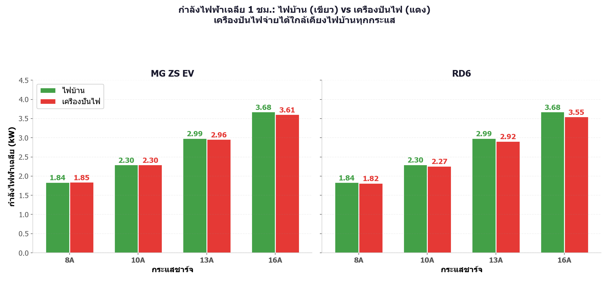
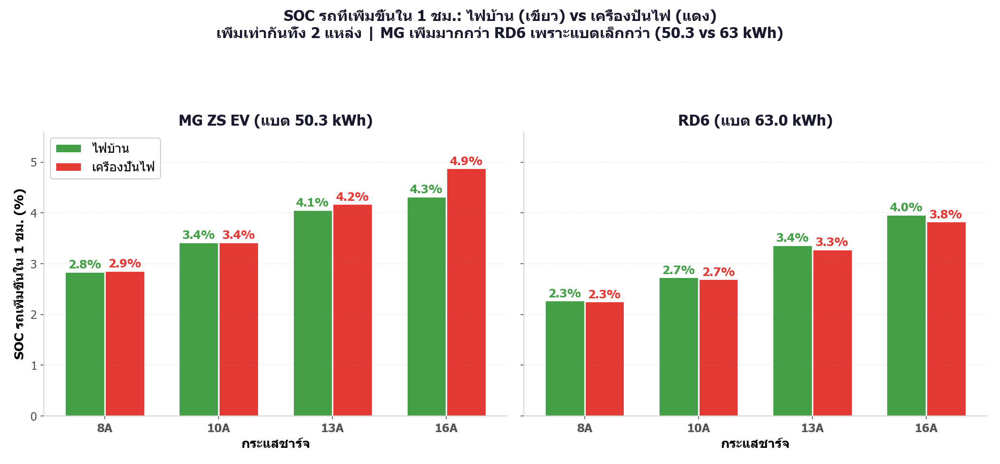
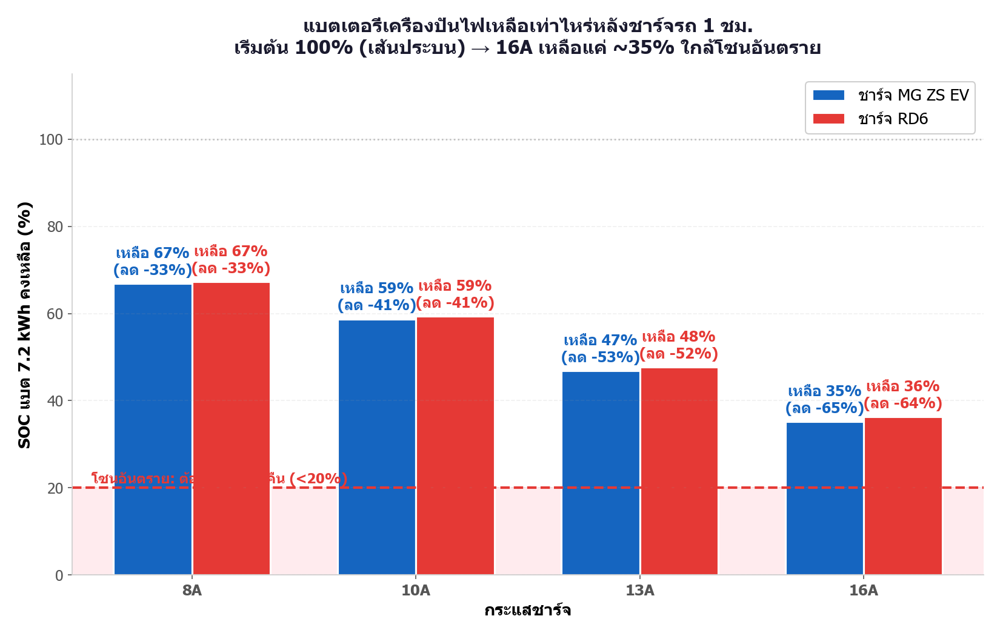
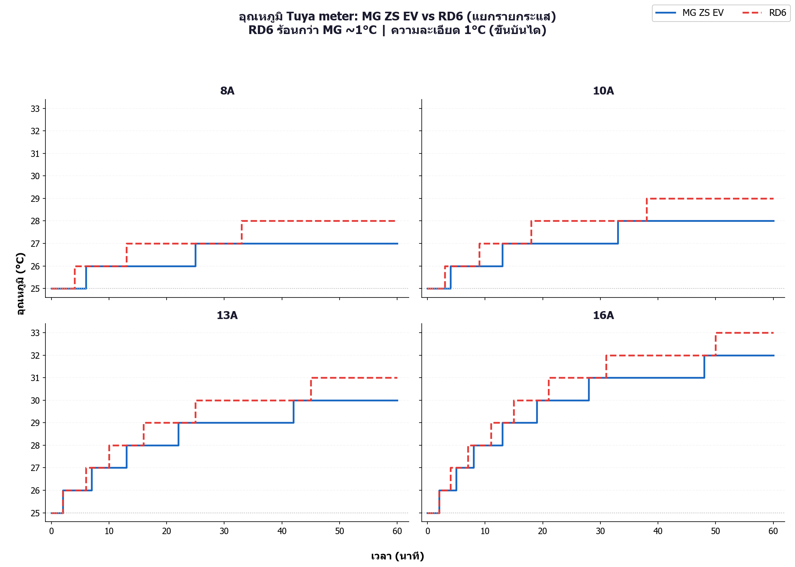
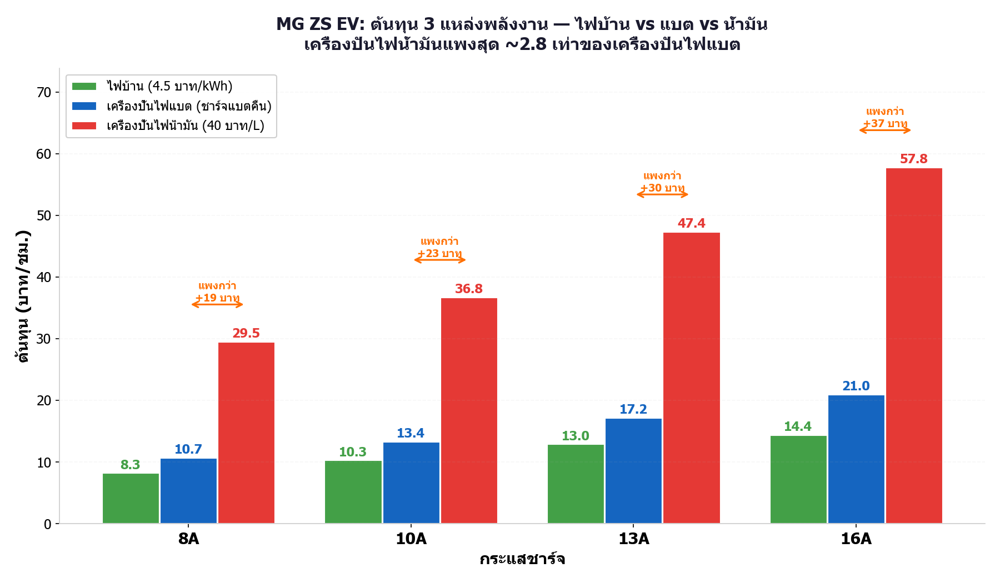
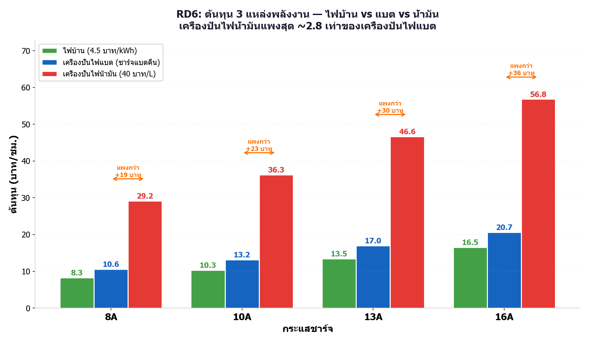
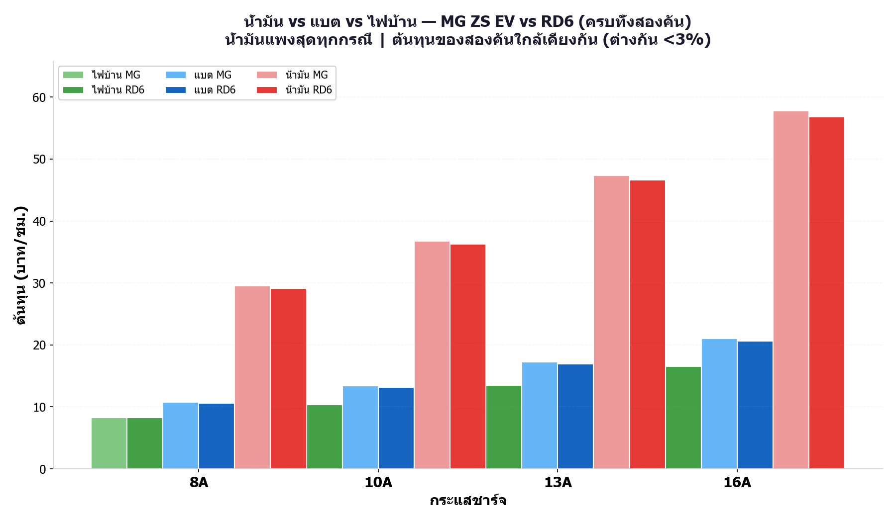
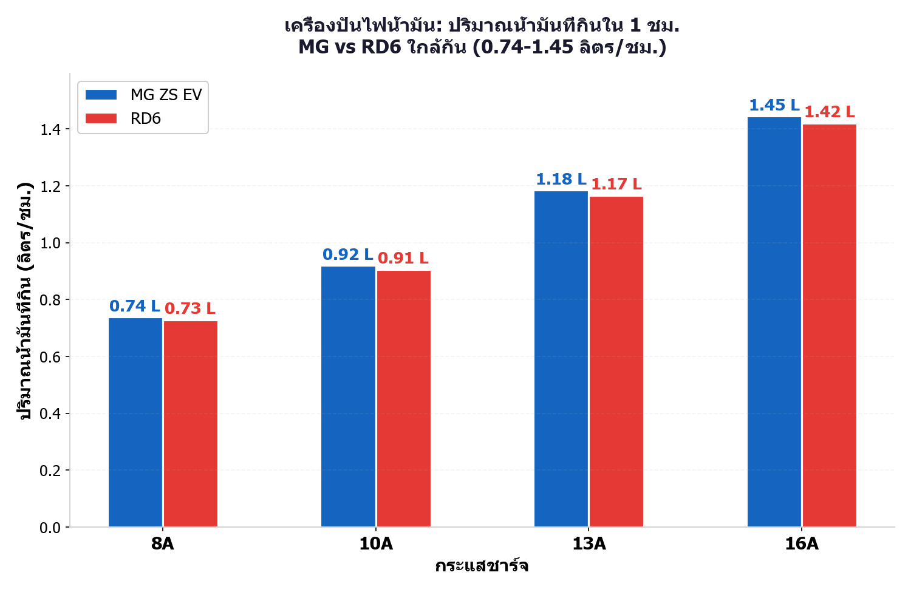

ระบบทดลอง
แบต 72V 100Ah (7.2 kWh) → มอเตอร์ FW15-7000 (η 91%) → AC Generator (η 85%) → หัวชาร์จรถ (η 68–78%)
ประสิทธิภาพระบบรวม 53–60% | ทดลองที่ 8A / 10A / 13A / 16A นาน 1 ชม. ต่อกรณี
📊 ตัวเลขสำคัญ (เครื่องปั่นไฟ, 16A)
3.61 kW
กำลังไฟ MG
RD6 3.55 kW
2.46 kWh
พลังงานรถได้ MG
RD6 2.42 kWh
+4.9%
SOC รถเพิ่ม MG
RD6 +3.8%
35%
แบตเครื่องปั่นเหลือ
RD6 36%
~2.7 เท่า
น้ำมันแพงกว่าแบต
ประหยัด 18.8–36.8 บ./ชม.
1. กำลังไฟฟ้า — ไฟบ้าน vs เครื่องปั่นไฟ (ทั้งสองคัน)
แยกซ้าย-ขวาเป็นรถแต่ละคัน เขียว=ชาร์จจากไฟบ้าน แดง=ชาร์จจากเครื่องปั่นไฟ

กำลังไฟฟ้าเฉลี่ย 1 ชม. — เครื่องปั่นไฟจ่ายได้ใกล้เคียงไฟบ้านทุกกระแส
2. SOC รถที่เพิ่มขึ้น (ทั้งสองคัน)
1 ชม. ทั้งสองแหล่งให้ SOC เท่ากัน | MG เพิ่มมากกว่า RD6 เพราะแบตเล็กกว่า (50.3 vs 63 kWh)

SOC เพิ่มใน 1 ชม.: MG 2.9–4.9% | RD6 2.2–3.9%
3. แบต 7.2 kWh เหลือเท่าไหร่หลังชาร์จ 1 ชม.
โซนแดง = ต่ำกว่า 20% ต้องชาร์จแบตคืน | ที่ 16A เหลือเพียง ~35% ทั้งสองคัน

SOC แบตคงเหลือ: MG 16A เหลือ 35% | RD6 เหลือ 36%
4. อุณหภูมิระหว่างชาร์จ (ทั้งสองคัน)
Tuya meter ความละเอียด 1°C | RD6 ร้อนกว่า MG ~1°C ทุกกระแส

อุณหภูมิขึ้นจาก 25°C → 27–33°C ตามกระแส
5. Loss พลังงานทั้งระบบ
แบต → มอเตอร์ (−9%) → เครื่องปั่นไฟ (−15%) → charger (−22–32%)

การไหลพลังงาน MG 16A

Loss แบ่งตามขั้นตอน

8A (η=60%) vs 16A (η=53%)

SOC แบตลดตามเวลา
6. ต้นทุนค่าไฟ (ทั้งสองคัน)
อัตราไฟฟ้า 4.5 บาท/kWh | เครื่องปั่นไฟแพงกว่าเพราะเสีย Loss ที่มอเตอร์+เครื่องปั่นไฟ

ไฟบ้าน vs เครื่องปั่นไฟ

ทุกกรณี เรียงแพง→ถูก
7. ⛽ เทียบกับเครื่องปั่นไฟน้ำมัน (ครบทั้งสองคัน)
สมมติฐาน: เครื่องปั่นไฟเบนซิน 5 kW | กินน้ำมัน 0.4 ลิตร/kWh | น้ำมัน 40 บาท/ลิตร
น้ำมันแพงกว่าแบต ~2.7 เท่า ทั้งสองคัน!
MG ZS EV

MG: น้ำมัน 29.5–57.8 บาท/ชม.
RD6

RD6: น้ำมัน 29.2–56.8 บาท/ชม.

6 แหล่งเทียบกัน — ต้นทุนสองคันใกล้เคียง <3%

น้ำมันที่กิน: 0.73–1.45 ลิตร/ชม.

ตารางคำนวณ: ลิตร = E_AC × 0.4 | บาท = ลิตร × 40
📋 ตารางเปรียบเทียบ MG ZS EV vs RD6 (เครื่องปั่นไฟ)
| กระแส | MG ZS EV (50.3 kWh) | RD6 (63 kWh) | ||||
|---|---|---|---|---|---|---|
| กำลังไฟ (kW) | SOC รถ+ | แบตเหลือ | กำลังไฟ (kW) | SOC รถ+ | แบตเหลือ | |
| 8A | 1.85 | +2.9% | 67% | 1.82 | +2.3% | 67% |
| 10A | 2.30 | +3.4% | 59% | 2.27 | +2.7% | 59% |
| 13A | 2.96 | +4.2% | 47% | 2.92 | +3.3% | 48% |
| 16A | 3.61 | +4.9% | 35% | 3.55 | +3.8% | 36% |
💡 ข้อค้นพบสำคัญ
- สองคันรับไฟใกล้กัน: กำลังไฟ 16A — MG 3.61 kW vs RD6 3.55 kW (ต่างกัน <2%) เครื่องปั่นไฟเดียวใช้ได้ทั้งคู่
- แต่ SOC เพิ่มต่างกัน: 1 ชม. 16A — MG +4.9% vs RD6 +3.8% เพราะแบต RD6 ใหญ่กว่า (63 vs 50.3 kWh)
- Loss ทั้งระบบ 40–47%: η รวม 53–60% — กระแสยิ่งสูง Loss ยิ่งมาก (charger 8A η=78% → 16A η=68%)
- แบต 7.2 kWh หมดเร็ว: 16A ใช้ 1 ชม. เหลือ ~35% — ต้องชาร์จแบตคืนก่อนโซนอันตราย 20%
- ต้นทุนเครื่องปั่นไฟแบต: แพงกว่าไฟบ้าน 2.4–4.7 บาท/ชม. แต่ ถูกกว่าน้ำมัน ~2.7 เท่า (ประหยัด 18.8–36.8 บาท/ชม.)
- เหมาะใช้ฉุกเฉิน: ชาร์จ 1 ชม. ได้ SOC ~3–5% พอขับไปสถานีชาร์จใกล้สุด ไม่ได้ใช้แทนสถานีชาร์จโหมดเร็ว